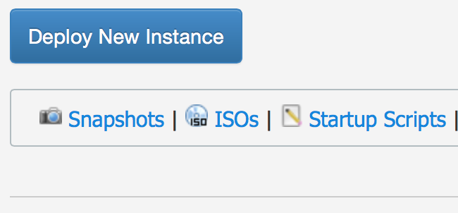
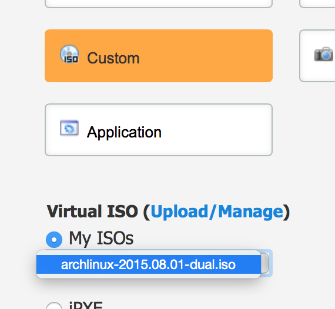
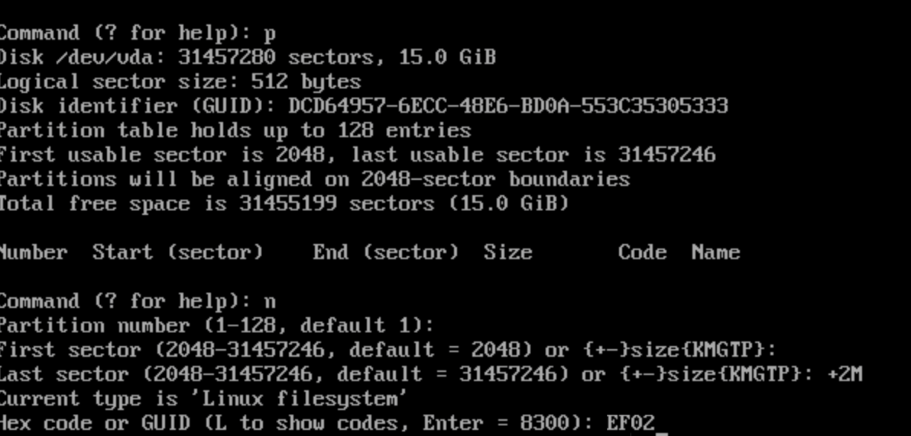
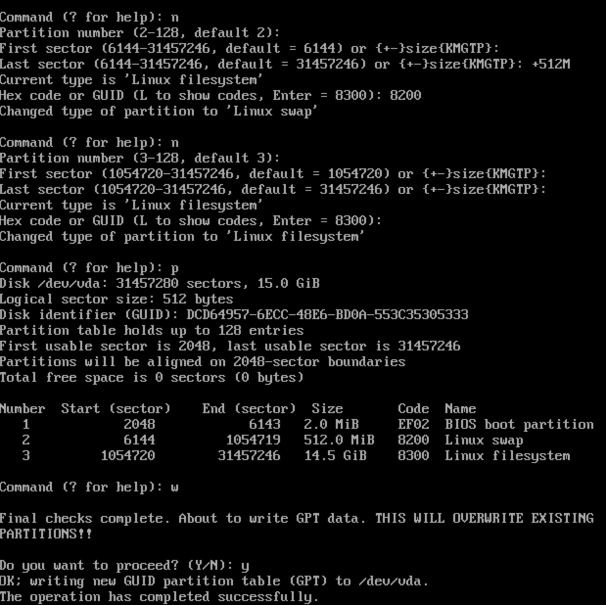

广告时间：在所有用过的 VPS服务商中，我一直依赖 Vultr，首先是日本线路质量比较可靠，其次价格平民，只要 5$/月（首次还送钱给你），最后就是最重要的，免费送你不限制的 Snapshot功能，让你克隆（备份）整机。所以不要由于，使用我的注册连接来注册试用（双方获利 ）：bao3的 Vultr 邀请
不过也要碰运气，在你 Deploy一台新的 VPS的时候要注意看分配给你的 IP地址，虽然同样是在日本，但是从中国过去的路由会有不同所以速度也一样会有差别，你可以不断地创建和删除 VPS，直到拿到对你来说比较不错的 IP地址。
记得哦，免费且不限制的 Snapshot 功能可以随时克隆（备份）你的 VPS，这样你可以随时重装、还原、创建新的 VPS
下载 iso安装盘
Vultr 上支持自定义系统而不必限于已经存在的系统，所以你去ISOs 输入 iso的地址，让 Vultr给你下载好。我的 VPS是日本节点，所以使用了日本的地址:
http://ftp.jaist.ac.jp/pub/Linux/ArchLinux/iso/2015.08.01/archlinux-2015.08.01-dual.iso

创建系统
这个应该都会了吧， Deploy 一个新的，注意先择系统时，使用你刚才下载的 iso ，不过在创建好之后系统根本不会自动安装好 Arch Linux，只不过是用光盘启动了而已。

注意一点，如果你创建的时候很不幸选了SATA （更多存储空间）那就郁闷了，因为有可能会莫名各种小毛病，影响后面的安装。
我经历过，所以只建议你使用 SSD套餐
并且 SATA套餐不能制作 Snapshot而 SSD可以，基于此，相当于多了一个免费的备份镜像，数据是数据是无价的。
开始安装
我相信你应该是一个具有动手能力的人，因为接下来的安装需要使用很多命令行指令。请在 VPS控制台 上选使用 VNC Console的方式来使用新创建的 VPS。
硬盘分区
整个安装过程中最核心的地方就是硬盘分区。原因在于 Vultr是基于 KVM的虚拟机，而我们又是用的 SSD ，所以是基于 BIOS + GPT的系统。而在默认情况下咱们的引动器 Grub只能支持 BIOS+ MBR 或者 EFI + GPT 的方式。Vultr 恰是个混合模式，会导致 Grub不引导的。
1. 首先我们必须分出一个 bios安装分区，用于存放存放标准的 Grub 的引导文件。
2. 如果你要承载 Web类服务，例如网站或者私有云 ( owncloud)，那么我们最好单独分一个 Swap 。
3. 默认情况下我们直接使用剩余的 SSD 作为整个系统磁盘，不单独分区了。
正面就开始咯：
gdisk /dev/vda
n
+2M
回车
EF02 （类型代码默认为 8300，要手动改）
截图如下：

剩下的空间就是你自己自由支配，我的就仅供参考（与平时的分区没有区别），注意看图片中一定会有一个 BIOS 分区，这是成功的关键:

当然最后还要写盘，这个我就不说按哪个键了。
开始安装
分区已经分好了，并且已经使用 ISO光盘启动了，接下来就是分区了，Arch Linux也有类似于 FreeBSD的交互式安装过程，不过在这里还是要用手动的过程，毕竟我也是第一次安装 Arch Linux 。 Vultr因为可以使用镜像来克隆，所以一次安装，永远安逸。
不过你需要注意的是，如果你的分区跟我不太一样，那接下来的步骤你需要有些调整，通常的调整就是 /dev/vda1 /dev/vda2 /dev/vda3这些编号有所不同。我只会依照我的来写。
mkswap /dev/vda2 -L SWAP
swapon /dev/vda2
mkfs.ext4 /dev/vda3 -L ArchOS
mount /dev/vda3 /mnt
好了，至此所有准备工作都已经完成了，我们开始安装系统核心了。
pacstrap /mnt base base-devel net-tools
这是要安装基本系统以及一些必要的套件，其中 net-tools是我额外加上的，因为这样可以在安装完使用诸如 ifconfig nslookup等等的小工具。经过等待（*通常为 2分钟 *左右），系统就已经完全OK了。
不过此时的系统还没有引导器 bootloader ,因此我们需要为系统安装一下：
arch-chroot /mnt
pacman -Sy grub
mkinitcpio -p linux
grub-install /dev/vda
grub-mkconfig -o /boot/grub/grub.cfg
配置网络连接
其实操作上来说，以上安装就已经可以重启你的 VPS 享受乐趣，不过在此之前，先要做一些小的配置。
1. 配置IP
如果不配置，你重启后系统会无法联网，做完这一步，以后你重启系统，就可以使用你自己的PC 的 SSH 来远程连接了。
配置DHCP，这一步比较简单，在你的命令行下接着输入：
systemctl enable dhcpcd
或者是
systemctl enable dhcpcd@eth0
通常你会看到 ( Created symlink from /etc/systemd/system/multi-user.target.wants/dhcpcd.service to /usr/lib/systemd/system/dhcpcd （或者@eth0）.service.)
重启前，记得使用
passwd修改一下你的 root 密码，以利于下一步 ssh从你的 PC上登录，摆脱网页登录的烦恼passwd
输入你的密码，在你输入的时候是不显示密码的，但是不用担心，这是 Linux / Unix 机制造成。
OK,启动你的机器试一下吧！
远程连接
在机器重启的过程，你也不必闲着，准备一个工具，从现在开始，我们要用自己的电脑客户端来连接。如果你是 Linux / Unix / Mac ，就直接使用终端 ssh 命令 如果是 Windows 就使用 Putty 或者 Xshell ，两者都是免费的。
提醒，SSH 连接涉及你的服务器安全，请一定要去官方网站下载工具，不要去网上找什么汉化版、修改版，以免这些工具利用你的 ssh 连接获取你的服务器密码、植入木马、作为攻击跳板等
针对 Mac ，打开 终端，输入
ssh root@your.vps.ip.address
使用你的 IP 地址替换后半部分，连接时会询问你是不是要添加
安装后有还有些额外调整，但不是必需的例如 hostname, locale, timezone，你完全可以不设置重启后再慢慢调整*
安装 yaourt
这部分是额外的设定，Arch 使用 pacman来管理包，但是有时候这些包更新慢，我们可以使用yaourt 来代替，可称为神器。我们需要修改
/etc/pacman.conf，使用nano /etc/pacman.conf加入以下代码：
[archlinuxcn]
SigLevel = Optional TrustedOnly
Server = http://repo.archlinuxcn.org/$arch
Control + X 保存( 选择 yes
) ，并退出
然后使用 pacman -Syu yaourt 安装。此后，你就可以使用 yaourt -Sy 软件包名称来自动使用其他用户分享的包， Enjoy~ it !
Arch 上安装 ocserv的时候，请在安装时选择手动编辑，然后去掉 autogen ，因为这货有引起编译错误导致失败。
完结